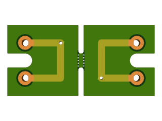

A set of libraries and tools to manipulate PCB data files
A set of libraries and tools to manipulate PCB data files
Here are some progressively more complex example scripts showing how you can use gerber-ltools.
The first step when using gerber-ltools usually consist in loading some board that you exported from your CAD software. First you need to load the boards module:
local boards = require 'boards'
Then to load a board you use the boards.load function:
local simple = assert(boards.load('./simple'))
This will simply print all the corresponding Gerber and Excellon file names, and validate the data (ie. if there is some loading error, you should get an error message). In all examples below we start from this simple board, which looks like this:

The final step of any manipulation script usually involves saving your board data. The function to call is boards.save:
local simple = assert(boards.load('./simple'))
assert(boards.save(simple, './save'))
As expected the output is identical to the input:

One common manipulation of boards consist in rotating them, for example because they are not square and better fit in another direction. Rotation and most manipulation are in the boards.manipulation module:
local manipulation = require 'boards.manipulation'
To rotate a board call manipulation.rotate_board with the board and a direct angle value in degrees as arguments:
local rotate = manipulation.rotate_board(simple, 90)
assert(boards.save(rotate, './rotate'))
The result is the same board as above, but rotated 90°:

One of the most important features of gerber-ltools is its ability to panelize boards, ie. to assemble several boards into a larger one. This is probably why you want to use gerber-ltools. The module you need for that is boards.panelization:
local panelization = require 'boards.panelization'
There you will find a panelization.panelize function that receives a layout table, an options table, a top-level orientation and that returns a new board object for the panel.
local simple = assert(boards.load('./simple'))
local layout = { simple, simple }
local panel = assert(panelization.panelize(layout, {}, true))
boards.merge_apertures(panel)
assert(boards.save(panel, './panel'))
Here the layout contains two copies of the simple board. These are actually Lua references, but since we don't modify them during panelization you can reuse the same board object several times. The options table is empty to use the defaults. The third argument true means the panel top-level is vertical. We're making a vertical panel because the simple board has a slot on its left side which would prevent the insertion of a break tab.
The resulting panel looks like that:

As you can see the panelize function automatically placed the sub-boards with a 2 mm gap, and it created a break tab to connect the two boards.
Of course you can combine the above operations to first modify the board, and then use the modified copy in a panel. Since our simple board has a slot on its left, we'll create a rotated copy with the slot on the right, so that we can create an horizontal panel.
local simple = assert(boards.load('./simple'))
local simple180 = manipulation.rotate_board(simple, 180)
local layout = { simple, simple180 }
local panel = assert(panelization.panelize(layout, {}, false))
boards.merge_apertures(panel)
assert(boards.save(panel, './panel2'))
As we have seen above the rotate_board function returns the rotated board. This means the original board is left intact, and we can use both in the panel. Generally the functions in the boards.manipulation module will create copies of the input data, which is kept unmodified.
This time we passed false as third argument to panelize, which means we want a horizontal panel. The result of this panel is as follows:

To verify that the right board has been rotated and not mirrored, you can check the little hole in the trace, which the left board has on the top-right, but which the right board has on the bottom-left.
We've seen above that the panelize function takes a panel layout as argument. A layout is a Lua array, so it can only have one dimension (either vertical or horizontal depending on the panelize third argument). But each element of the array can be either a board, or another sub-panel layout. This is how you construct complex panels recursively. As you can guess this limits the kind of panels you can create. To access a single board you always break the panel in two along a single line, several times if necessary depending on the layout depth. This has advantages (panel separation is easy) but also drawbacks (e.g. you cannot completely surround your panel with a rectangle frame to improve its stiffness).
Here is an example script with a two level layout:
local simple = assert(boards.load('./simple'))
local simple90 = manipulation.rotate_board(simple, 90)
local simple180 = manipulation.rotate_board(simple, 180)
local simple270 = manipulation.rotate_board(simple, 270)
local layout = {
{ simple90, simple180 },
{ simple, simple270 },
}
local panel = assert(panelization.panelize(layout, {}, true))
boards.merge_apertures(panel)
assert(boards.save(panel, './panel3'))
Each level of the layout has to be made of boards with the same size along the alignment direction. For a horizontal layout, all boards must be the same height. For a vertical layout, all boards must be the same width. Here our simple board is a square, so even rotated it will always have the same size on both axis.
Another thing to keep in mind is that the layout describe panels from left to right, and from bottom to top. This means in the example above, the first sub-panel with simple90 and simple180 will actually be on the bottom of the output panel.
The resulting 2D panels looks like this:

As we've seen before there is only one breaking tab between the left and right part of each sub-panel, but there are two between the top and bottom sub-panels. This is because the panelize function will insert breaking tabs in each segment of sub-panel edge that match on both sides of the gap, and sometimes more along long edges.
Sometimes you not only want to manipulate and assemble existing boards, but you may want to create new boards on the fly. For example you may want to put spacers between boards in a panel to account for over-hanging components, or you might want to add a frame with tooling holes and fiduciaries.
The panelization module has a function named empty_board that lets you create such an empty board. You can either pass dimensions so that your board is created with a rectangle outline, or call the function without arguments to get a completely empty board without dimensions (to be used as a canvas for drawing, see below).